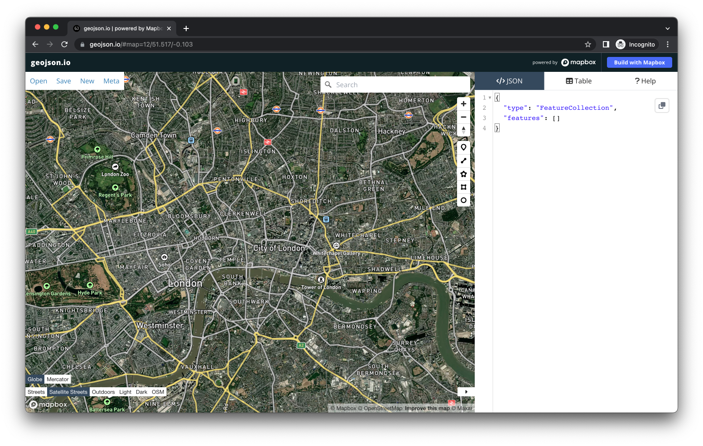
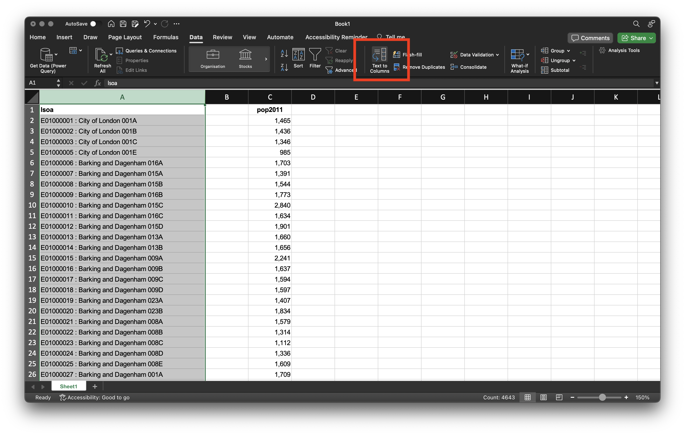
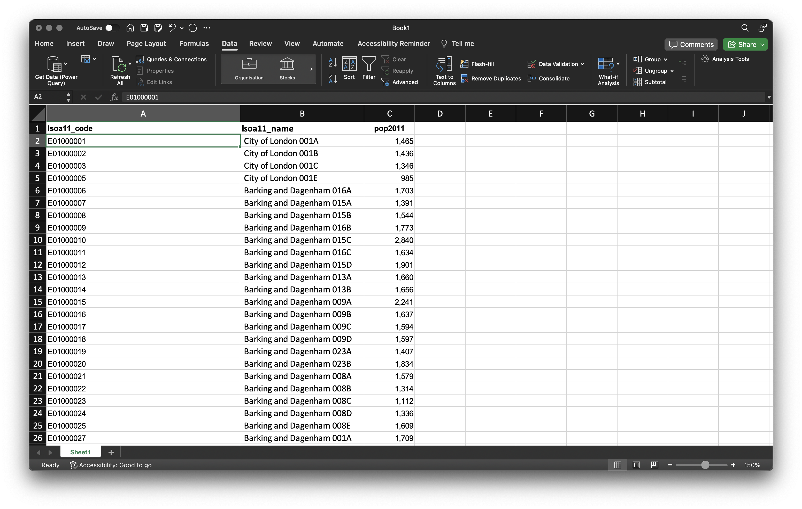
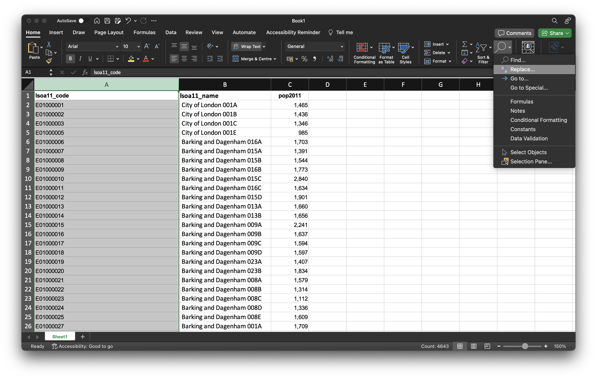
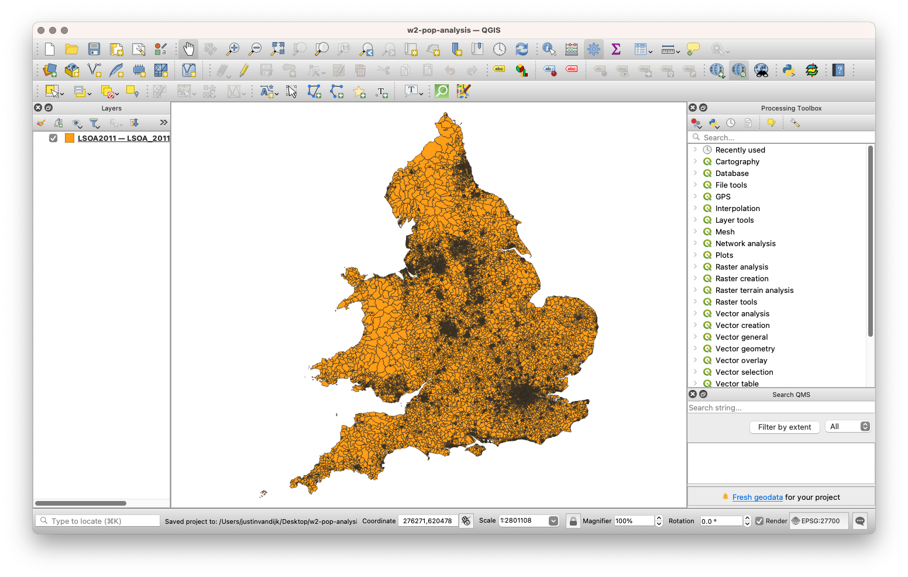
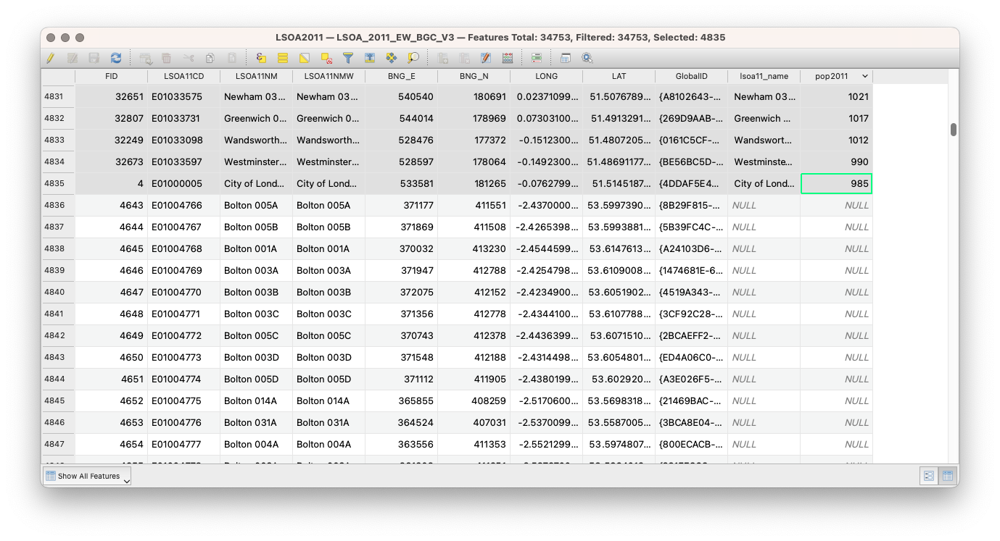
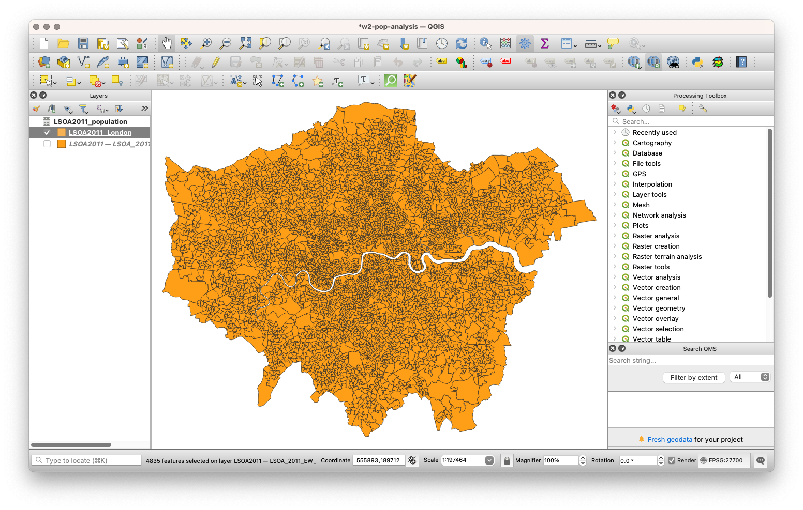
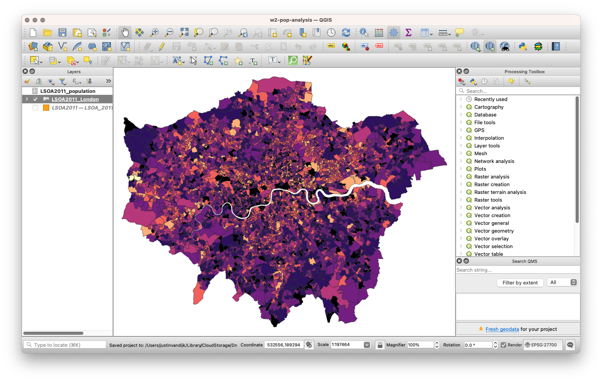

2 GIScience and GIS software
This week’s lecture introduced you to foundational concepts associated with GIScience and GIS software, with particular emphasis on the representation of spatial data and sample design. Out of all our foundational concepts you will come across in the next four weeks, this is probably the most substantial to get to grips with and has both significant theoretical and practical aspects to its learning. The practical component of the week puts some of these learnings into practice, starting with a short digitisation exercise followed by a simple visualisation of London’s population in the Census years of 2011 and 2021.
2.1 Lecture slides
The slides for this week’s lecture can be downloaded here: [Link]
2.2 Reading list
Essential readings
- Longley, P. et al. 2015. Geographic Information Science & Systems, Chapter 2: The Nature of Geographic Data. [Link]
- Longley, P. et al. 2015. Geographic Information Science & Systems, Chapter 3: Representing Geography. [Link]
- Longley, P. et al. 2015. Geographic Information Science & Systems, Chapter 7: Geographic Data Modeling. [Link]
Suggested readings
- Goodchild, M. and Haining, R. 2005. GIS and spatial data analysis: Converging perspectives. Papers in Regional Science 83(1): 363–385. [Link]
- Schurr, C., Müller, M. and Imhof, N. 2020. Who makes geographical knowledge? The gender of Geography’s gatekeepers. The Professional Geographer 72(3): 317-331. [Link]
- Yuan, M. 2001. Representing complex geographic phenomena in GIS. Cartography and Geographic Information Science 28(2): 83-96. [Link]
2.3 Simple digitisation of spatial features
To get spatial features in a digital form, they need to be digitised. It is as simple as that. Let’s take a quick look in this first part of the practical at a straightforward example of digitising the river Thames in London.
We will use a very simple online tool that allows us to create digital spatial data and export these data for use in other software programmes:
- Head to geojson.io.
- In the bottom left-hand corner, select Satellite Streets as your map option.
- Next, click on the
Draw Linestringtool which you can find on the right hand side of the screen. You can hover over the icons to get the names of each tool. - Now digitise the river Thames. Simply click from a starting point on the left- or right-hand side of the map, and digitise the river.
- Once you are done, double-click your final point to end your line.
- You can click on the line and select Info in the pop-up screen to find out how long the line is.
- You can export your data using the Save menu.
2.4 Population change in London
The second part of this practical will introduces you to Attribute Joins and choropleth maps. You will be using different types of joins throughout this practical, this module in general, and probably the rest of your career, so it is incredibly important that you understand how these work.
The datasets you will create in this practical will be used in coming week’s practicals, so make sure to follow every step and save your data carefully.
When using spatial data, there is generally a specific workflow that you will need to go through and, believe it or not, the majority of this is not actually focused on analysing your data. One of the most often-quoted GIS-related ‘facts’ is that anyone working with spatial data will spend 80% of their time simply finding, retrieving, managing and processing the data before any analysis can be done.
One of the reasons behind this is that the data you often need to use is almost never in the format that you require for analysis. Instead, we need to go and find the raw datasets and create the data layers that we want ourselves.
A typical spatial analysis workflow typically will look something like this:
| Step | Action |
|---|---|
identify |
Think about the data you need to complete your analysis. |
find |
Find the data that matches your requirements. |
download |
Store the data on your computer in the right folder. |
clean |
Assess whether the data needs pre-processing before moving to QGIS or R. |
load |
Load the cleaned data into QGIS, R, or software of choice. |
process |
Prepare the data so that they are ready for analysis (e.g. joining, aggregating). |
analyse |
Execute the actual analysis that you set out to do. |
visualise |
Create graphs and maps where appropriate. |
As you can see, the analysis and visualisation parts only make up the last steps of the workflow and instead, the workflow is very top-heavy with data management.
Very often in GIS-related courses you will be given pre-processed datasets. Because data management is an essential part of your workflow, we will clean the majority of our data from the get-go. This will help you understand the processes that you will need to go through in the future as you search for and download your own data before loading it into your GIS environment.
2.4.1 Setting the scene
In this part of the practical, we will investigate how the population in London has changed over time. Understanding population change over time and space is spatial analysis at its most fundamental. We can understand a lot just from where population is growing or decreasing, including thinking through the impacts of these changes on the provision of housing, education, health and transport infrastructure. Today we will look at population in London in the Census years of 2011 and 2021 at the so-called Lower Super Output Area (LSOA) geography level (see @#02-download-spatial below for some details on Administrative Geographies).
We will use the population dataset we create today to normalise other datasets in the module. Why? When we record events created by humans, there is often a population bias: simply, more people in an area will by probability lead to a higher occurrence of said event, such as crime. We will look at this in greater detail next week.
2.4.2 Finding data
In the UK, finding authoritative data on population and Administrative Geography boundaries is increasingly straightforward. Over the last decade, the UK government has opened up many of its datasets as part of an Open Data precedent that began in 2010 with the creation of data.gov.uk and the Open Government Licence (the terms and conditions for using data).
Data.gov.uk is the UK government’s central database that contains open data that the central government, local authorities, and public bodies publish. This includes, for example, aggregated census and health data. In addition to this central database, there are other authoritative databases run by the government and/or respective public bodies that contain either a specific type of data (e.g. Census data, crime data) or a specific collection of datasets (e.g. health data from the NHS, data related to London). Some portals are less up-to-date than others, so it is wise to double-check with the ‘originators’ of the data to see if there are more recent versions.
For our practical, we will access data from two authoritative data portals:
- For our administrative boundaries, we will download the spatial data through the Open Geography Portal.
- For our population data, we will download attribute data directly from the Office of National Statistics (ONS).
2.4.3 Housekeeping
Before we download our data, it is important to establish an organised file systems that we will use throughout the module. Create a GEOG0030 folder in your Documents folder on your computer and within your GEOG0030 folder, create the following subfolders:
| Folder name | Purpose |
|---|---|
raw |
To store all your raw data files that have not yet been cleaned and processed. |
data |
To store data files that have been cleaned and processed. |
output |
To store all your final output data files and maps. |
2.4.4 Downloading spatial data
We will start by downloading the administrative geography boundaries for England and Wales:
- Navigate to the Open Geography Portal: [Link]
- In the main menu go to Boundaries -> Census Boundaries -> Lower Layer Super Output Areas -> 2011 Boundaries.
- Click on LSOA (Dec 2011) Boundaries Generalised Clipped BGC EW V3.
- Click on Download -> Download GeoPackage.
Repeat the above process to also download the 2021 LSOA boundaries: Lower Layer Super Output Areas (2021) Boundaries EW BGC. Make sure you download the Generalised (20m) version.
Administrative geographies are a way of dividing the country into smaller sub-divisions or areas that correspond with the area of responsibility of local authorities and government bodies. These administrative sub-divisions and their associated geography have several important uses, including assigning electoral constituencies and serving as a mechanism for collecting Census data. These geographies are updated as populations evolve and as a result the boundaries of the administrative geographies are subject to either periodic or occasional change. This is why we need to download both 2011 and 2021 LSOA boundaries. More details on the administrative geographies of the UK can be found on the website of the Office for National Statistics. On a different page they also explain the Census 2021 geographies, which include the LSOAs that we are using.
Now open your GEOG0030/data/raw/ folder and create a new folder called boundaries. Rename the two files you just downloaded to LSOA2011.gpkg and LSOA2021.gpkg, respectively, and copy these into your boundaries folder.
You may have used spatial data before and noticed that we did not download a collection of files known as a shapefile but a GeoPackage instead. Whilst shapefiles are still being used, and you will most likely come across them at some point in your career if you have not already, the more modern, more portable, and open-source GeoPackage file format should be your spatial data format of choice where possible. Have a look at this article on towardsdatascience.com for an excellent explanation on why one should use GeoPackage files instead of shapefiles: [Link]
2.4.5 Downloading population data
For our population data, we will use the 2011 and 2021 Census population counts that are made available by the ONS through their Nomis portal.
To get the 2011 Census population counts, you should:
- Navigate to the Nomis portal: [Link]
- Click on Query data in the Data Downloads panel.
- Click on Census 2011 -> Key Statistics.
- Click on KS101EW - Usual resident population.
- Select Geography and set 2011 super output areas - lower layer to All.
- Click on Download data at the left hand side of the screen.
- Once the data is ready for download, download the file to your computer.
To get the 2021 Census population counts, you should:
- Navigate to the Nomis portal: [Link]
- Click on Query data in the Data Downloads panel.
- Click on Census 2021 -> Topic Summaries.
- Click on TS007A - Age by five-year age bands.
- Select Geography and set 2021 super output areas - lower layer to All.
- Click on Download data at the left hand side of the screen.
- Once the data is ready for download, download the file to your computer.
In your GEOG0030/data/raw/ folder, now create a new folder called population and copy the two Excel files to the newly created population folder. Rename the files you downloaded to: LSOA2011_population.xlsx and LSOA2021_population.xlsx, respectively.
2.4.6 Cleaning data
When you open up any of the LSOA spreadsheets in Excel, you will notice that some additional rows of information are contained at the top of each of these files. This extra information will confuse QGIS and we therefore need to do a bit of data cleaning. To reduce the chance of errors in later stages, we will also save the data in csv format.
csv stands for comma (or character) separated values. A csv file can be thought of as stripped-down Excel spreadsheet in which every column of data is separated by a comma. If you open a csv file within Excel, however, it will look ‘normal’. The advantage of using csv files is that it (should) make it easier to read data into QGIS and R as less things can go wrong. csv does have its limitations, especially when you are dealing with large datasets. A powerful and modern alternative is the parquet format. For an introduction on how to use this, refer to Chapter 23 in Hadley Wickham’s R for Data Science (Second Edition)
London population in 2011
Open the LSOA2011_population.xlsx file in Excel. We have two main columns: one with identifying information that distinguishes each area from one another and one with population counts. In addition, there are some less informative rows at the top of the spreadsheet.
Looking at this we need to take three steps. First, we need to remove the top rows that we do not need. Second, we need to make sure that we extract all the rows with data that are relevant to Greater London. Third, we need to spread the information in the first column into two columns. Currently, this columns contains unique area codes as well as unique area names. However, to be able to effectively link our population data to our spatial data, the codes are much more reliable and much less likely to cause issues than the area names. Putting area codes and area names into separate columns will help us sorting this out.
- Open a new Excel spreadsheet. From the
LSOA2011_population.xlsxspreadsheet, cut (Edit -> Cut) all cells from columns A to B and rows 9 to 4,651 into this new spreadsheet. Row 4,651 denotes the end of the majority of the Greater London LSOAs. - Now we need to identify the missing LSOAs that were not kept at the top of the file with the other London LSOAs, probably because these LSOAs got introduced at a later point in time. Unfortunately, we can only do this manually by searching for the name of each of the London Boroughs and subsequently cutting the associated rows of data from the spreadsheet and pasting these into the second spreadsheet.
- Go to Edit -> Find -> Find. Type in City of London. Cut (Edit -> Cut) the two rows of data (City of London 001F, City of London 001G) and paste these at the bottom of the second spreadsheet.
- Repeat this process to find all missing LSOAs by searching the names of all 32 London Boroughs.
You can make this process a bit less tedious by using keyboard shortcuts. On MacOS you can use: cmd + f to open up the find menu, cmd + x to cut data, and cmd + v to paste data. On Windows you can use: ctrl + f to open up the find menu, ctrl + x to cut data, and ctrl + v to paste date.
Not all of the 32 London Boroughs have missing LSOAs whilst in other cases the missing LSOAs are not grouped together (e.g. Wandsworth and Southwark) so after cutting the data, try Find again to make sure you did not miss any LSOAs. Once you are done cutting and pasting, you should have 4,836 rows of data in your second spreadsheet.
| London Boroughs | |
|---|---|
| Westminster | Sutton |
| Kensington and Chelsea | Crodyon |
| Hammersmith and Fulham | Bromley |
| Wandsworth | Lewisham |
| Lambeth | Greenwich |
| Southwark | Bexley |
| Tower Hamlets | Havering |
| Hackney | Barking and Dagenham |
| Islington | Redbridge |
| Camden | Newham |
| Brent | Waltham Forest |
| Ealing | Haringey |
| Hounslow | Enfield |
| Richmond upon Thames | Barnet |
| Kingston upon Thames | Harrow |
| Merton | Hillingdon |
- Once you copied all the rows of data, rename the columns in the new spreadsheet to
lsoaandpop2011, respectively. - Cut all the data from the
pop2011column that is stored in column B and paste these into column C. You now should have a column without any data between thelsoaandpop2011columns. - Highlight the entire
lsoacolumn and in the Data menu click on the Text to Columns menu button.

lsoa columns and find the Text to Columns menu option. Note that column B does not contain any data. [Enlarge image]Note that the Text to Columns function might be elsewhere in the menu depending on your version of Excel and/or your operating system.
- In the Text to Columns menu, select the Delimited radio button and click Next.
- Uncheck the checkbox for Tab and put
:(colon) into the Other box. Click Finish. - Change the name of the
lsoacolumn tolsoa11_codeand change the name of the now populated column B tolsoa11_name.

- One thing that might cause problems when we try to link the population data to the spatial data is that there are still spaces contained in the
lsoa11_codecolumn. This is not directly noticeable as these spaces arewhite spacecharacters at the end of the LSOA codes without any other characters following it (i.e. trailing spaces). This may seem trivial, but we need this column later and computer language is very precise so we need to remove these. We can do this by highlighting the entirelsoa11_codecolumn and in the Home menu opting for Replace under the Find & Select menu.

- In the Find what box put in a singular
white space, using the spacebar on your keyboard, keep the Replace with box empty, and click on Replace all. You should get a message that 4,835 replacements have been made. - One further bit of formatting that you must do before saving your data is to format our population field. At the moment, you will see that there are commas separating the thousands within our values. If we leave these commas in our values, QGIS will read them as decimal points, creating decimal values of our population. There are many points at which we could resolve this issue, but the easiest point is now - we will strip our population values of the commas and set them to integer (whole numbers) values. To format the
pop2011column, highlight the entire column and right-click on theCcell. Click on Format Cells and set the cells to Number with 0 decimal places. You should see that the commas are now removed from your population values. - Save your spreadsheet as a
csvfile into yourdatafolder asLSOA2011_population.csv.
After saving the file, Excel might give you a warning along the lines of Possible data loss. You can safely ignore this message as the only ‘information’ you have lost is markup information (e.g. fonts, colours, items in bold, etc.) or formulas within Excel (e.g. if you used Excel formulas to calculate means, medians, etc.). In some cases you might also have options to choose what type of csv you would want to save the spreadsheet as. If so, opt for something along the lines of CSV UTF-8 (Comma-delimited) (.csv).
Depending on the language settings of your operating system (e.g. Windows, MacOS, Linux) and language settings, csv files might use a different character instead of a comma. This may seem trivial, but it can cause issues when reading the data into a different programme. It is therefore always a good idea to check your csv file in a plain text editor (e.g. Textedit on MacOS or Notepad on Windows). In case you do not see commas (,), but semicolons (;) you can apply a quick and dirty fix to your data by finding and replacing every ; with a , in the same that way we fixed our problematic white space characters in Excel.
London population in 2021
Now the 2011 data is prepared, we can move to the 2021 data:
- Open the
LSOA2021_population.xlsxin Excel. You will notice that the file is formatted largely the same as theLSOA2011_population.xlsxfile, although if you were to look closely you will notice that the majority of London data are not at the top this time but that Local Authority Districts are grouped together - and in fact all data pertaining to Greater London are also grouped together. This makes our lives much easier because we can now simply cut the data for each of the 32 Boroughs and City of London in one go. - Open a new Excel spreadsheet. From the
LSOA2021_population.xlsxspreadsheet, cut (Edit -> Cut) all cells from columns A to B and rows 19,790 to 2,4783 and paste these into this new spreadsheet. - Take the remaining steps to prepare the 2021 population steps: split the
lsoacolumn, remove the trailingwhite spacecharacters from the LSOA code column, and remove the decimal commas in the population count column. - Save the file as
csvinto yourdatafolder asLSOA2021_population.csvwith the following column names:lsoa21_code,lsoa21_name, andpop2021.
Again make sure you did not miss any LSOAs. You should end up with 4,995 rows of data in your second spreadsheet.
2.4.7 Mapping population data
Setting up a project
We will now use QGIS to create population maps for the LSOAs in London for both years. To achieve this, we need to join our table data to our spatial datasets and then map our populations for our visual analysis.
Due to the differences in the LSOA boundaries between 2011 and 2021, we can only make a visual comparison between the two years. You will notice that data interoperability is a key issue that you will face in spatial analysis, particularly when it comes to working with Administrative Geographies.
- Start QGIS.
- Click on Project -> New. Save your project as
w2-pop-analysis. Remember to save your work throughout the practical. - Before we get started with adding data, we will first set the Coordinate Reference System of our Project. Click on Project -> Properties – CRS. In the Filter box, type British National Grid. Select OSGB 1936 / British National Grid - EPSG:27700 and click Apply. Click OK.
We will explain CRSs and using CRSs in GIS software in more detail next week. For now all you need to know is that the CRS makes sure that the data we plot on the map are plotted in the correct location.
Adding spatial data
Now are project is set up, we can start by loading our 2011 spatial layer.
- Click on Layer -> Add Layer -> Add Vector Layer.
- With File as your source type, click on the small three dots button and navigate to your 2011 boundary files.
- Here, we will select the
LSOA2011.gpkgdataset. Highlight the file and click Open. Then click Add. You may need to close the box after adding the layer. The 2011 LSOA geography for England and Wales should now be loaded.

Conducting an attribute join
We are now going to join our 2011 population data to our 2011 spatial data file. We start by adding the 2011 population data to our project.
- Click on Layer -> Add Layer -> Add Delimited Text Layer.
- Click on the three dots button again and navigate to your 2011 population data in your
datafolder. Your file format should be set tocsv. You should have the following boxes clicked under the Record and Field options menu:Decimal separator is comma,First record has field names,Detect field typesandDiscard empty fields. QGIS does many of these by default, but do double-check. - Set the Geometry to No geometry (attribute only table) under the Geometry Definition menu. Then click Add and Close. You should now see a table added to your
Layerspane.
We can now join this table data to our spatial data using an Attribute Join.
An Attribute Join is one of two types of data joins you will use in spatial analysis (the other is a Spatial join, which we will look at later on in the module). An attribute join essentially allows you to link two datasets together, as long as they share a common attribute to facilitate the ‘matching’ of rows:

Essentially you need a single unique identifying (UID) field for your records within both datasets: this can be a code, a name or any other string of information. In spatial analysis, we always join our table data to our spatial data. One way to think about it as attaching the table data to the spatial data layer.
To make a join work, you need to make sure your ID field is correct across both datasets, i.e. no typos or spelling mistakes. Computers can only follow instructions, so they do not know that St. Thomas in one dataset is the same as St Thomas in another.
As a result, whilst in our datasets we have kept both the name and code for both the boundary data and the population data, when creating the join, we will always prefer to use the code over their names. Unlike names, codes reduce the likelihood of error and mismatch because they do not rely on understanding spelling. Common errors, such as adding in spaces or using 0 instead O (and vice versa) can still happen but it is less likely.
To make our join work, we need to check that we have a matching UID across both our datasets. We therefore need to look at the tables of both datasets and check what attributes we have that could be used for this possible match.
- Open up the Attribute Tables of each layer and check what fields we have that could be used for the join. We can see that both our respective ‘code’ fields have the same codes (
LSOA11CDandlsoa11_code) which seem to contain the same type of information. - Right-click on your
LSOA2011spatial layer, click on Properties and then click on the Joins tab.- Click on the + button. Make sure the Join Layer is set to
LSOA2011_population. - Set the Join field to
lsoa11_code. - Set the Target field to
LSOA11CD. - Click the Joined Fields box and click to only select the
pop2011field. - Click on the Custom Field Name Prefix and remove the pre-entered text to leave it blank.
- Click on OK.
- Click on Apply in the main Join tab and then click OK to return to the main QGIS window.
- Click on the + button. Make sure the Join Layer is set to
We can now check to see if our join has worked by opening up the Attribute Table of our LSOA11CD spatial layer and looking to see if our LSOAs now have a Population field attached to it.
- Sort the data in the Attribute Table on the
pop2011field by clicking on the column name: all LSOAs for which we have population data (i.e. only the London LSOAs) are now grouped at the top of the file. Select the first 4,835 rows of data.
You can select the first row, scroll down to the last row that has population data, hold down the shift button on your keyboard, and click on the last row that has population data to select all rows that we need in one go.

- Close the Attribute Table. Right-click on the
LSOA2011layer and select Export -> Save Selected Features As. Set Format toGeoPackageand click on the small three dots button next to File name and navigate to yourdata/raw/boundariesfolder. Save the file asLSOA2011_London.gpkg. - You can now untick the
LSOA2011containing all the LSOAs for England and Wales. Right-click on theLSOA2011_Londonlayer and click on Zoom to Layer(s).

The main strength of a GUI GIS system is that is really helps us understand how spatial data relate to one another and are visualised. Even with just two spatial layers loaded, we can understand two key concepts of using spatial data within GIS. The first, and this is only really relevant to GUI GIS systems, is that each layer can either be turned on or off, to make it visible or not. The second concept is the order in which your layers are drawn – and this is relevant for both GUI GIS and when using plotting libraries such as ggplot2 or tmap in RStudio. Your layers will be drawn depending on the order in which your layers are either tabled (as in a GUI GIS) or ‘called’ in your function in code. Being aware of this need for ‘order’ is important when we shift to using RStudio and tmap to plot our maps, as if you do not layer your data correctly in your code, your map will end up not looking as you hoped. For us using QGIS right now, the layers will be drawn from bottom to top.
We can now finally map the population distribution of London in 2011.
- Right-click on the
LSOA2011_Londonlayer and click on Properties -> Symbology.- In the dropdown menu at the top of the window, select Graduated as symbology.
- Under Value choose
pop2011as your column. - We can then change the color ramp to suit our aesthetic preferences. In the Colour ramp dropdown menu select Magma.
- The final thing we need to do is classify our data - what this simply means is to decide how to group the values in our dataset together to create the graduated representation. We will be looking at classification options in later weeks, but for now, we will use the Natural Breaks option. Open the drop-down menu next to Mode, select Natural Breaks, change it to 7 classes and then click Classify.
- Finally click Apply to style your dataset.
Understanding what classification is appropriate to visualise your data is an important step within spatial analysis and visualisation, and something you will learn more about in the following weeks. Overall, they should be determined by looking at the distribution of the underlying data.
You should now be looking at something like this:

Whereas the above map is fine for today, it is technically incorrect because we are showing absolute numbers on a choropleth. This is something we should never do, unless the spatial units are identical in size (e.g. a hexagonal tessellation of an area), because larger areas will draw attention and affect the visualisation.
2.4.8 Exporting map for visual analysis
To export your map select only the map layers you want to export and then opt for Project -> Import/Export -> Export to Image and save your final map in your output folder. Next week, we will look at how to style our maps using the main map conventions (adding North Arrows, Scale Bars and Legends, etc.) but for now a simple output will do.
2.5 Assignment
You now need to repeat the entire process to also create a map for the 2021 Census data. Remember, you need to:
- Load the respective spatial layer.
- Load the respective population dataset.
- Join the two datasets together using an Attribute Join.
- Export your joined dataset (London only) as a
GeoPackageand save this into yourdatafolder asLSOA2011_London.gpkg. We will use this file in later weeks. - Style your data appropriately.
- Export your maps as an image to your
outputfolder.
To make visual comparisons against our two datasets, theoretically we would need to standardise the breaks at which our classification schemes are set at. To set all two datasets to the same breaks, you can do the following:
- Right-click again on the
LSOA2011_Londondataset and, click on Styles -> Copy Styles -> Symbology. - Now right-click on the
LSOA2021_Londonfile, and click on Styles -> Paste Style -> Symbology. You should now see the classification breaks in the 2021 dataset change to match those in the 2011 data. - The final thing you need to do is to change the classification column in the
Symbologytab for the 2021 dataset to reflectpop2021.
2.6 Before you leave
Save your project so you can go back to it if you need to, other than that that is it for this week!